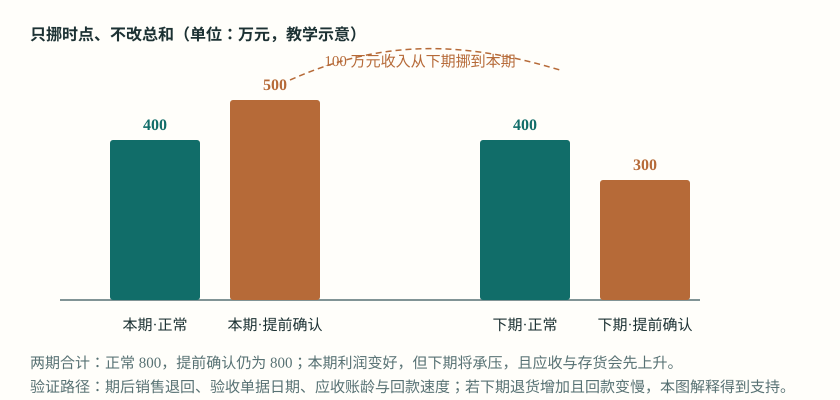

财务粉饰手法与识别边界
财务粉饰不等于财务造假：前者多在准则允许的判断空间内“做平滑”，后者是违反准则的故意错报。对分析者而言，两者都要处理，但处理方式不同——粉饰要问“能不能持续”，造假要找外部证据。
粉饰与造假的界线
先明确三个词的区别，因为后续所有手法都依赖这个区分：
- 盈余管理（粉饰）：在准则允许的判断空间内选择会计政策或估计，或安排真实交易时点。例如选择折旧年限、安排发货与开票时点。它合法，但不等于“没有信息含量”——如果调节方向年复一年一致，就需要问它能不能持续。
- 会计差错：因错误或舞弊导致的错报，包括故意与非故意两种。准则区分会计政策变更、会计估计变更与前期差错更正，三者的处理方式不同：政策变更通常追溯，估计变更只用未来适用，重大前期差错需要更正并披露。
- 财务造假：故意编造或隐瞒导致报表错报，属于违法。认定需要监管或司法程序，分析者能做的是提供需要核查的证据清单。
对分析者的实用结论：粉饰与造假在早期往往表现为同一件事——“本期数字好转了，但找不到业务证据支撑”。因此两种情形的第一步动作相同：把好转拆到具体科目，再找外部证据。不是先给公司定性。
收入端的四种手法
收入是大多数风控的起点，因为收入同时带动利润、应收与现金流三条线。四种常见做法及其可核对证据：

- 提前确认收入：在控制权转移前确认（如发出即确认而客户尚未验收，或未考虑退货权）。检查点是收入确认政策、验收单、期后销售退回与应收账龄。
- 虚构或循环交易：收入与成本同时虚增，毛利率极低。识别线索是交易对手是否新设、是否与公司或大股东存在关联、资金是否回流、以及交易是否有商业实质。
- 总额法与净额法滥用：公司是否为主要责任人的判断需看是否承担存货风险、是否主导定价、是否承担信用风险，而不是看合同名称。收入巨大而毛利率极低是需核对的线索，但低价贸易本身也可能真实存在。
- 融资性贸易：以购销形式提供资金融通，形式上产生收入与成本，实质上是借贷。需对比预付、其他应收与同一交易对手的资金往来。
费用与估计的腾挪空间
费用端的手法比收入端更隐蔽，因为它往往披着“会计判断”的外衣。三类常见做法：
- 费用资本化：把应进入当期损益的支出计入长期资产（如将日常维护性支出计入在建工程或无形资产、将研发支出尽量划入开发阶段）。检查点是资本化率的变化、同类公司对比、以及资本化项目是否真的形成可用资产。
- 延后确认费用：把本期已发生的成本挂为预付账款或其他应收款，等以后再转出。它抬高了本期利润与现金流，但其他应收款或预付款项会异常增长。
- 不当会计估计变更：延长折旧年限、降低坏账计提比例、降低存货跌价计提比例都属于估计范畴。变更本身合法，但需区分它是否有新信息支撑：政策变更通常追溯，估计变更只用未来适用，前期差错需更正披露。判定依据是附注披露的变更理由、影响额与支持文件。
常见误读：“估计变更合法”不等于“不必追问”。合法变更也可能把本期成本推迟到以后年度，因此要算清变更对未来年度损益的影响额，而不是只看“合法与否”。
资产端的水分
资产端的核心问题是“该减不减、该转不转”：
- 应收长期挂账不计提：账龄很长的应收仍按低比例计提，或以“对方信用良好、正在商议”为由不计提。按预期信用损失的要求，减值准备应基于前瞻性证据，而不是固定比例；因此要查账龄、单一客户集中度与期后回款。
- 存货不计提跌价：库龄长、单价持续下跌的存货仍按成本计量。需对比存货周转天数、产销率与同行业跌价计提比例。
- 在建工程长期不转固：项目已投产却仍挂在建工程，从而避免计提折旧。需对比项目进度公告、产能释放与折旧费用。
- 商誉不减值：减值测试使用的增长率与折现率假设远高于行业实际。需核对测试假设、标的公司实际业绩与业绩承诺完成情况。
这四类项目的共同特征是都依赖未来假设，而假设好坏在本期无法直接验证。因此分析时应把它们集中列成一张“假设清单”，逐项标出假设值、历史实际值与差异，而不是只看本期计提金额。
表外安排与入表现状
“表外”不是一片固定的区域：准则修订会改变项目的入表状态，因此要先看现行规定，再看披露。下列五项需分开核对：
承租人通常需就除短期与低价值资产租赁以外的租赁确认使用权资产与租赁负债，并披露租赁负债到期结构与未折现现金流；不再能假设“租赁不入表”。
少数股东投资若附带回购义务或收益保障，需判断其是否具备负债特征。需核对投资协议中的回购条款、优先清算权与表决权安排。
对外担保、差额补足与回购承诺属于或有事项，需看公告与预计负债计提，以及被担保方是否已出现偿付困难。
是否终止确认应收款项取决于风险与报酬是否转移、是否保留追索权；需核对“应收款项融资”与保理协议条款。
是否纳入合并范围取决于控制三要素的判断，需核对纳入/不纳入的理由与相关披露。
收入质量工作台
数据为教学示意，可手工复算：收入增长 =（2400 − 2000）÷ 2000 = 20%；应收增长 =（900 − 500）÷ 500 = 80%；收现比 = 2100 ÷ 2400 = 0.88；应收增速与收入增速相差 60 个百分点。
修改数据，即时复算
金额与期间必须一致；应收口径应含合同资产时才需单独说明。
把上期应收从 500 改为 800（相当于应收基数本来就高），其余不变：应收增长降至 12.5%，与收入增速的差距缩小到约 7.5 个百分点。同一组数据在不同基数下给出的信号强度不同，因此单期数字必须放进多期序列里看。
证据清单与自测
面对“数字变好了”的情形，按下列顺序取证，比先下结论有效：
附注：收入确认政策（总额法/净额法）、合并范围变更、关联方及交易金额、会计估计变更理由与影响额、减值测试关键假设。
现金流量表补充资料：把净利润调到经营现金流的每一项，逐项与资产负债表变动对平。
公告：问询函与回复、更正公告、担保与质押公告、重大合同与部分终止公告。
外部意见：审计意见类型、关键审计事项、内部控制审计意见、以及监管机构的公开处理信息。
自测一：公司延长了固定资产折旧年限，是否可以断定它在粉饰利润？
不能直接断定。需看披露的变更理由（如资产实际使用状况、维修记录、技术更新速度）、变更对未来年度损益的影响额，以及同类公司的做法。合法变更与不当调节的差别在于是否有新信息支撑。
自测二：经营租赁是否属于“表外负债”？
这个说法已不成立。按《企业会计准则第 21 号》（2018 年修订），承租人通常需确认使用权资产与租赁负债，并在附注披露到期结构。仍可表外的是准则允许豁免的短期与低价值资产租赁。
结论：识别粉饰的交付物是“科目—手法—证据”三栏对照表；在证据不足时，正确做法是列为待核实，而不是用“很可能造假”代替结论。
依据与边界
本页所有公司描述与数字均为教学示意，不指向任何真实上市公司，也不构成投资建议。真实案例应直接引用监管机构公布的处罚决定书原文（写明机关、日期与文号）。
手法分类与检查思路属于作者讲解；会计处理与披露要求以下列官方文件为准。